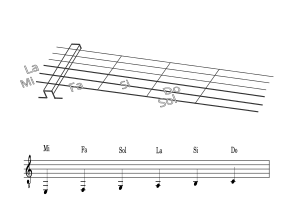

N otes sur corde de Mi et La
- Petit rappel, nous avons déjà vu la représentation en solfège des cordes de Mi et La.
- Nous allons maintenant apprendre la position des quatre notes situées sur les trois premières cases de ces deux cordes.
- A savoir:
- le Si sur la deuxième case de la corde de La
- le Do sur la troisième case de la corde de La
- le Fa sur la première case de la corde de Mi
- le Sol sur la troisième case de la corde de Mi

G amme de Do
- Maintenant que vous connaissez la position des notes sur toutes les cordes de la guitare, vous pouvez jouer la gamme de Do.
- La gamme de Do est composée des notes : Do, Ré, Mi, Fa, Sol, La, Si, Do
- Essayez de bien respecter l'alternance majeur / index des doigts la main de droite pour développer une bonne technique.
🎧
U ne poule sur un mur
- Le morceau permet de travailler la coordination main droite / main gauche avec des notes simples et répétitives.
- Ecoutez d'abord l'extrait audio, puis suivez la partition pour associer le rythme et les notes.
🎧